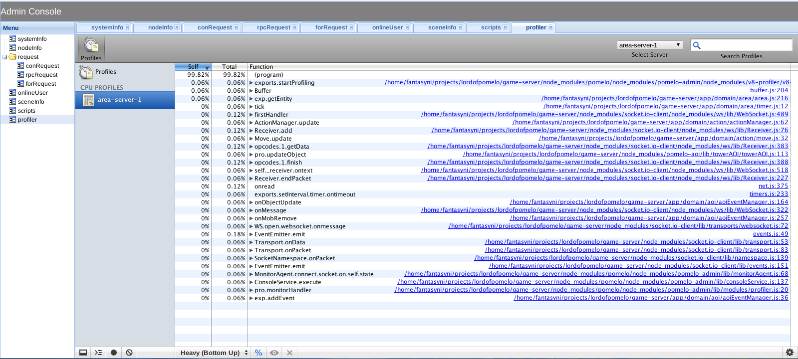

pomelo-admin-web provides a way to monitoring status of the running pomelo server cluster via a web browser based on the monitoring and management framework provided by pomelo. Through pomelo-admin-web, you can make real-time monitoring on the running status, performance, logs, etc. for the pomelo server cluster. Here its depends on several admin-module shown as following:

'System Info'
public/js/systemInfo.js
It is used to monitor system information for each server, including loadavg, men, CPU(I/O), DISK(I/O).
'Process Info'
public/js/nodeInfo.js
It is used to monitor node process information for each server, including pid, cpu%, mem%, vsz, rss.
'Conn Request'
public/js/conRequest.js
It is used to monitor request logs generated by the connector server, including time spending for players' logging, moving, switching area and the request route.
'Rpc Request'
public/js/rpcRequest.js
It is used to monitor rpc invocations of the game server cluster.
'Forward Request'
public/js/forRequest.js
It is used to monitor logs of request forwarding.
'Online User'
public/js/onlineUser.js
It is used to monitor information of online players, including logged username, logged ip, logged time.
'Scene Info'
public/js/sceneInfo.js
It is used to monitor the information of areas, including players and coordinates of the players.
'Scripts'
public/js/scripts.js
This admin-module provides an approach to execute a script in a certain server via client registered to master server. pomelo-cli also uses this admin-module.
'RPC Debug'
public/js/rpcDebug.js
Module for fetching rpc log data from mongo (https://npmjs.org/package/pomelo-rpcdebug-module)
'Profile'
public/js/profiler.js
Note: you need to enable this module by removing comments around line 56 of public/js/main.js
Profiles provided by chrome which is a performance analysis tool is integrated into this admin-module, so it can be used for performance analysis of the pomelo server cluster.
Platform Supported: Linux and Mac OS:
$ git clone https://github.com/NetEase/pomelo-admin-web.git
$ cd pomelo-admin-web
$ node app
The address http://localhost:7001.
If the pomelo project has been launched before, you can monitor its information now.
If port conflict happening, you can modify config/admin.json to avoid it. The browser should support WebSocket, the latest Chrome is recommended.
For script admin-module, the script executed is same as in pomelo-cli, within which there is a specification for how to write this kind script.